Практичні курси · журнал «ДентАрт» 2018 №4
Адгезивні мостоподібні конструкції бічних зубів
ADHESIVE BRIDGE STRUCTURES OF POSTERIOR TEETH
Ольга Пономаренко,клініка-студія «Аполлонія» (м. Полтава, Україна)
У клінічній практиці часто зустрічаються включені дефекти з відсутністю одного зуба. Вторинна адентія є наслідком травм або невдалого ендолікування, хоча останнім часом пацієнтів з вродженою адентією в нашій практиці зустрічається все більше. Функція жування порушується навіть при відсутності одного зуба, підвищується навантаження на зуби, що залишилися, і з часом відбувається переміщення сусідніх зубів у бік відсутнього, змінюється прикус, і у пацієнтів виникають естетичні і психологічні проблеми.
Сучасна стоматологія пропонує чотири варіанти вирішення проблеми: імплантація, непряма мостоподібна конструкція, адгезивна мостоподібна конструкція, виконана у напівпрямій або прямій техніці з опорою на скловолокно, і частковий знімний протез. Кожен з методів має повне право на існування, вони широко використовуються у стоматологічній практиці, мають свої переваги і недоліки. Чим більшою кількістю технологій володіє лікар-стоматолог, тим ефективніший вибір вирішення конкретного завдання. Наявність альтернативної технології, що дозволяє відновити включені дефекти зубних рядів без значного втручання в опорні зуби, хірургічного етапу, розширює можливості для відновлення цілісності зубного ряду у тієї категорії пацієнтів, котрі з якихось причин не відважуються на імплантацію або не мають бажання жертвувати тканинами опорних зубів для непрямого протезування. І не хочуть бути щасливими володарями знімного протеза.
Реставрація являє собою конструкцію, виконану фотополімерним матеріалом на основних складових елементах – скловолоконній балці, яка зафіксована в опорних зубах, у спеціально підготовлених пропилах. Балка фіксується на жувальній або піднебінній поверхні опорних зубів (залежно від виду конструкції) у підготовлених порожнинах. Проміжна частина конструкції – імітація коронки відсутнього зуба – виконується з композиту з урахуванням усіх анатомічних параметрів.
Технічно метод полягає в підготовці опорних зубів, фіксації армуючої балки і відновленні проміжного штучного зуба. За рахунок адгезивного міцного з'єднання армуючої балки з тканинами зуба і композитом, внутрішнім розташуванням армуючої балки уздовж осі опорних зубів досягається високий ступінь ретенції і рівномірний розподіл жувального навантаження на опорні зуби.
Ця методика може з успіхом застосовуватися тільки у певних клінічних умовах і при дотриманні протоколу побудови конструкції. Адгезивний шлях протезування можливий лише при ізоляції робочого поля рабердамом. Суворе дотримання показань і протипоказань дозволяє звести до мінімуму невдачі і отримати стійкі позитивні естетичні та функціональні результати.
Показання для виконання адгезивних мостоподібних конструкцій:
- При включених дефектах зубних рядів у результаті втрати одного зуба: першого або другого премоляра або першого моляра за умови конвергенції опорних зубів не менше ніж 1/3 відстані.
- Як тимчасове рішення на етапах імплантації.
- У разі відмови пацієнта від класичних ортопедичних методів протезування.
Протипоказання:
- Значні руйнування опорних зубів, якщо тканини не здатні сприйняти повноцінну адгезію.
- Дефект великої протяжності (більше двох зубів).
- Патологічна стертість, низькі клінічні коронки.
- Парафункції, бруксизм.
- Поворот і значний нахил опорних зубів.
- Захворювання пародонту тяжкого ступеня.
Абсолютним протипоказанням для виготовлення адгезивних мостоподібних конструкцій є робота без ізоляції рабердамом.
Головні конструктивні елементи
Опорні зуби
До початку побудови конструкції слід провести комплексну діагностику ситуації та планування реставрації, оцінити стан зубів, які обмежують дефект, перевірити оклюзійні співвідношення і положення зубів-антагоністів. Визначення параметрів форми, колірної конструкції, прозорості, мікрорельєфу також провадиться на етапі планування. Зуби, які обмежують дефект, можуть бути як інтактними, так і з дефектами, вітальними чи девітальними, але лише в тому випадку, якщо вони можуть сприйняти повноцінну адгезію прямої реставрації. За необхідності в опорних зубах робиться ревізія кореневих каналів з повним відновленням анатомічної форми.
Одна з переваг прямих конструкцій – менший ступінь препарування опорних зубів у порівнянні з традиційним препарування під коронки.
Біомеханічно сприятливою умовою для виконання адгезивної конструкції є опорні зуби середньої висоти клінічної коронки. При високих клінічних коронках небезпека травматичної оклюзії у стадії компенсації істотно зростає. При низьких коронках ускладнена побудова мостоподібної конструкції через брак місця для фіксації армуючої балки.
При відновленні опорних зубів слід пам'ятати про відтворення контактних пунктів між опорними зубами, які беруть участь у мостоподібній конструкції, і зубами, що стоять поруч. Це дозволить відновити безперервність зубної дуги і посприяє рівномірнішому розподілу жувального тиску.
Після повноцінної підготовки опорних зубів, інтеграції їх в оклюзії можна братися до створення порожнин, в яких будуть фіксуватися армуючі фрагменти балки. Довготермінове надійне функціонування мостоподібної конструкції можливе тільки при адекватному препаруванні опорних зубів. Незважаючи на незначний об'єм висічення твердих тканин, вид препарування зуба для фіксації балки і дизайн порожнини повинні бути ретельно продумані. Для стабілізації елементів армуючої балки найраціональнішим типом препарування є виконання пропилів за типом порожнин класів II і III по Блеку. У ситуації з інтактними опорними бічними зубами доцільніше препарування без втручання в крайовий валик, за типом щадного методу тунельного препарування, який передбачає внутрішній доступ у порожнини на контактних поверхнях через триангулярну ямку зі збереженням контактної емалі і крайового валика.
При препаруванні пропилів слід враховувати три основних параметри, що характеризують їх дизайн і положення на коронці зуба, для поліпшення стабілізації армуючої балки: протяжність, глибину, ширину/висоту. Оскільки в адгезивних мостоподібних конструкціях бічних зубів можуть брати участь опорні зуби – ікло, премоляр або моляр – буде подано характеристики порожнин як бічних, так і фронтальних опорних зубів.
Протяжність – це площа, яку займає пропил на жувальній (в опорному молярі, премолярі) або піднебінній (в опорному іклі) поверхні коронки зуба. У мезіо-дистальному напрямку пропил не повинен заходити за середину коронки. При препаруванні майданчиків на бічних опорних зубах слід керуватися принципом «краще глибше і коротше, ніж довше і більш поверхнево». Глибока порожнина забезпечує більшу міцність, ніж неглибока, бо дозволяє розташувати більшу кількість волокон одне над одним. Щоб уникнути травматичного пульпіту, потрібно точно визначити топографію пульпової камери в опорних зубах, застосовуючи реєстрацію стану опорних зубів у рентгені.
Розрахунок глибини пропилу в опорних зубах слід враховувати таким чином, щоб на ділянках, які зазнають оклюзійного навантаження, над волокном був простір для 1-2 мм шару композиту, щоб не допускати поверхневої фіксації волокна. В опорних молярах і премолярах пропил робиться на глибину половини анатомічної коронки, з урахуванням рецесії ясен. В опорному іклі глибина пропилу повинна сягати половини товщини коронки на проксимальній поверхні зуба у піднебінно-вестибулярному напрямку. Рекомендовано дотримуватися приблизно однакової глибини препарування в усіх опорних зубах під конструкцію.
Третя характеристика – це ширина/висота пропилу. Широка порожнина забезпечує більшу стійкість до торсійних навантажень, ніж звужена. При формуванні пропилів не можна точково звужувати зону контакту між опорним і штучним зубами. Це може призвести до ослаблення опірності конструкції в цих позиціях ротаційному впливу, який розвивається під час інтенсивних навантажень на зуби у бічних відділах. Параметр ширини пропилу розраховується як ширина фрагмента армуючої балки +1,5 мм, які потрібні для горизонтального (в бічному опорному зубі) або вертикального (у фронтальному зубі) позиціонування фрагментів балки. Орієнтиром середини висоти пропилу в опорному іклі може бути точка проксимального контактного пункту.
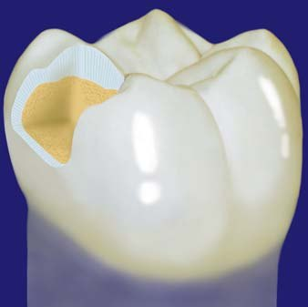
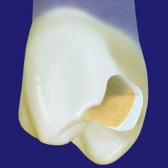
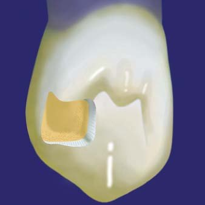
Рис. 1-3. Дизайн і розміщення пропилів на опорних молярі, премолярі та іклі.
У зазначених параметрах на очищених опорних зубах м'яким олівцем рекомендується зробити начерк меж майбутнього препарування, оскільки його можна робити і під ізоляцією рабердамом, але при цьому стають недоступними орієнтири ясенного краю.
Армуюча балка
Роль армуючої балки – стабілізація конструкції в опорних зубах і армування периметру штучного зуба. Надійна адгезія між волокном і композитним матеріалом – основний фактор, що визначає якість армованої реставрації. Довговічність і функціональність мостоподібної конструкції залежать від міцності армуючого матеріалу.
Скловолоконні системи з преімпрегнацією адгезивного агента в структуру волокон у заводських умовах – це поки що найдосконаліша група з армуючих систем. Найбільшу міцність (до 1500 МПа) мають скловолокна, наповнені композиційною смолою промисловим способом, – завдяки повній однорідності після полімеризації і хімічному зв'язку з композитом.
Для створення балки в адгезивних мостоподібних конструкціях як армуюче скловолокно у поданій технології ми використовуємо систему Dentapreg (ADM, Чехія). Залежно від показань застосовуємо армування реставрації формами випуску з односпрямованим розташуванням волокон і волокнами плетеного типу.
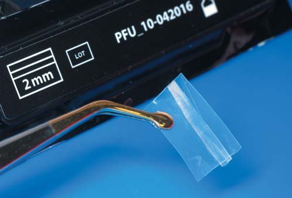
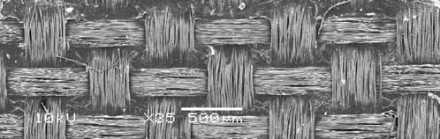
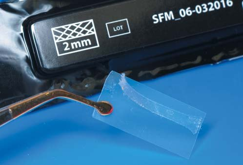
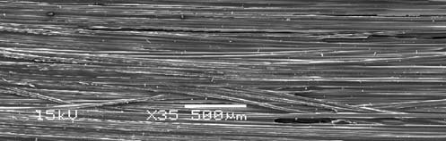
Завдяки міцному хімічному зв'язку між усіма складовими елементами однорідна гомогенна конструкція волоконно-армованої композитної адгезивної прямої реставрації буде еластичною, розвантажувальною для зубів і менш вибагливою до умов ретенції і фіксації – у порівнянні з непрямими конструкціями на жорсткій основі (метал, циркон). Волокна мають високу міцність на розрив, а при навантаженнях на згинання починають працювати на розтягування, опираючись таким чином згинальному зусиллю.
DENTAPREG SPLINT SFM (ADM, Чехія) – балка з орієнтацією волокон плетеного типу у вигляді стрічки шириною 2 мм, товщиною 0,3 мм, міцністю на згинання 480 МПа і модулем еластичності 15 ГПа. Скловолокно рекомендоване для використання в конструкціях, які не зазнають граничних навантажень (заміщення дефекту при відсутності одного переднього зуба або премоляра), або в тимчасових і умовно-тимчасових конструкціях.
DENTAPREG BRIDGE PFU (ADM, Чехія) – односпрямована балка шириною 3 мм, товщиною 0,3 мм, міцністю на згинання 1300 МПа і модулем еластичності 15 ГПа.
На етапі планування побудови конструкції, після препарування порожнин в опорних зубах для фіксації армуючих елементів, слід підготувати викрійку-шаблон у вигляді корду або штрипси шириною 2 мм для майбутніх фрагментів армуючої балки. З урахуванням контурів зуба, вестибулярного або орального вигинів у проміжній зоні робляться заміри потрібної довжини майбутньої балки і відрізаються в заданих параметрах довжини заготовки скловолокна.
Біомеханічно зуби концентрують жувальні навантаження в зоні шийки, куди передаються значні навантаження на згинання. А в зубі, виконаному на армуючій балці, який не має стабілізації коренем, сила буде трансформуватися в торсійні прокручуючі навантаження в місцях контактних з'єднань. Через це ніколи не можна виконувати конструкцію на одній балці, використовуючи тільки один фрагмент скловолокна в одній площині, це може призвести до біомеханічної нестійкості конструкції. Для впевненої стабільності конструкції один з фрагментів повинен підсилювати вестибулярну стінку і горби, а другий – бути опорою піднебінного периметру штучного зуба; за необхідності можливе використання додаткового третього фрагмента скловолокна (при відсутньому молярі).
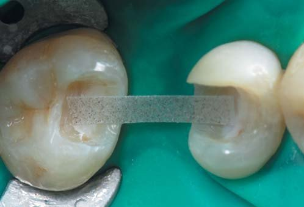
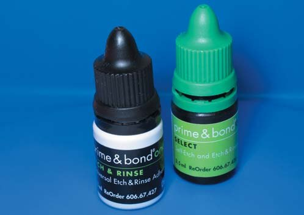
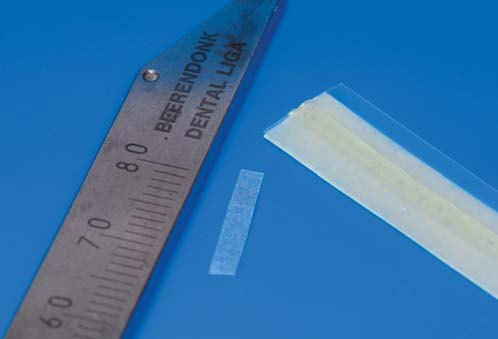
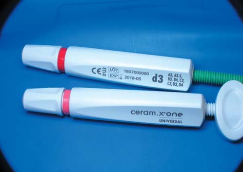
Після синхронно проведеної адгезивної підготовки на опорних зубах провадиться поетапна фіксація фрагментів опорної балки на відтінок композиту-імітатора шару плащового дентину, оскільки топографічно саме в цьому шарі і міститиметься армуючий елемент. В алгоритмі біоміметичної побудови пропонуються відтінки нанонаповненого ормокера D3 Церам-Ікс (Дентсплай Сірона), вони мають гарні характеристики вклеюваності та еластичності. Раніше не рекомендувалося використовувати текучий композит для фіксації армуючої балки, бо його текучі властивості досягалися шляхом зменшення наповненості матеріалу, що послаблювало його міцність, а це в мостоподібній конструкції могло стати слабким місцем. Але з появою на ринку нового текучого композиту ЕсДіАр (Дентсплай Сірона) стало можливим його використання в таких конструкціях для фіксації волоконної балки в підготовленій порожнині опорного бокового зуба. Міцність цього матеріалу відповідає значному оклюзійному навантаженню в бічних відділах, показники усадки не призводять до розвитку значного полімеризаційного стресу, а його консистенція дозволяє звести до мінімуму прошарок композитного посередника між волокном і стінкою зуба, не впливаючи на міцність конструкції. Зручність внесення його в порожнину зуба і унікальна здатність цього матеріалу до самоадаптації до дентину зуба скорочують тривалість вклеювання і стабілізації волокна при його фіксуванні в опорному зубі.
Дизайн розташування і укладання фрагментів армуючої балки залежить від клінічного різновиду конструкції, в якій ділянці зубної дуги вона міститься.
Клінічні різновиди мостоподібних конструкцій
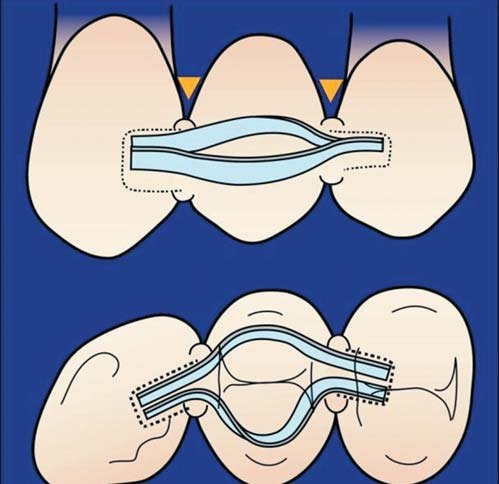
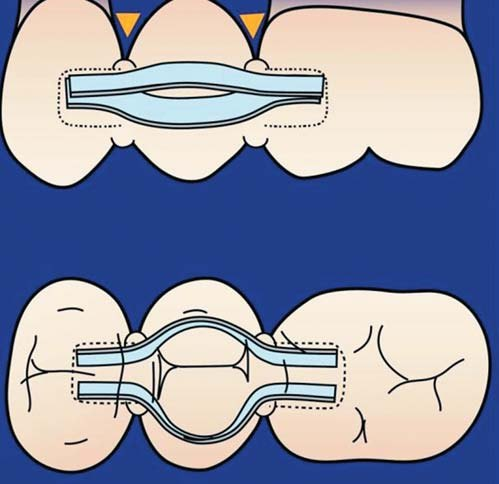
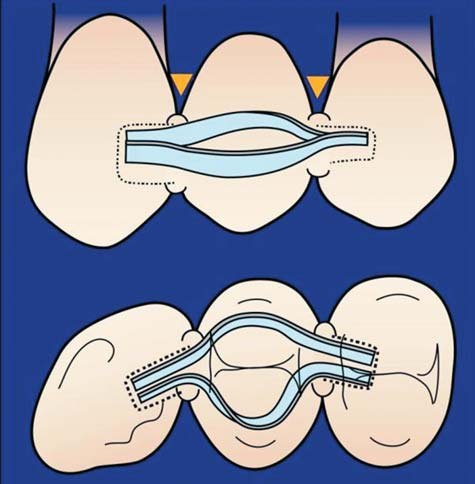
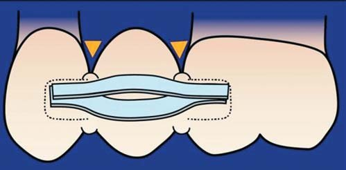
Конструкція ПЕРЕДНІЙ – БІЧНИЙ – БІЧНИЙ. Відсутній перший премоляр. Конструкція включає зуби фронтальної (ікло) і бічної (другий премоляр) ділянок і зустрічається в клінічній практиці найчастіше.
Головна особливість конструкції полягає в тому, що ближче до молярів жувальні зуби складніше деформуються на згинання, вертикальне навантаження інтенсивніше, а периметр протезованого зуба зростає. Трансверзальні навантаження докладаються тільки на напрямні горбики.
У такій конструкції на верхній щелепі в зоні контакту між іклом і премоляром розташовується оклюзійна точка контакту з нижнім іклом у центральній оклюзії, і тому потрібно точно планувати висоту проксимального валика на штучному першому верхньому премолярі. Якщо з антагоністом відбулися вторинні деформації, то слід так спланувати свою роботу, щоб після фінішної обробки не розкрити волокно в точці контакту. Конструкція армуючої балки має перехід по площині з вертикальної (в опорному іклі) в горизонтальну (у штучному першому премолярі та опорному другому премолярі). При цьому вестибулярний фрагмент балки фіксується в оральному пропилі опорного ікла у вертикальній площині, а в премолярах – у куті між дном і вестибулярною стінкою пропилу. Оральний фрагмент фіксується за таким самим принципом, тільки в опорному премолярі місце його фіксації – між дном і оральною стінкою.
Конструкція БІЧНИЙ – БІЧНИЙ – БІЧНИЙ. Відсутній другий премоляр або моляр. Конструкція обмежена зубами бічної ділянки. Армована балка розташовується лише в одній горизонтальній площині опорних і штучного зубів. Перший моляр є великим ключем оклюзії, і в його зоні розвивається перше за інтенсивністю жувальне навантаження. Для додаткового посилення амортизаційної здатності балку рекомендовано доповнити третім елементом з гінгівальним прогином у напрямку жувального навантаження.
Для стійкості конструкції в горизонтальній площині потрібно максимально розвести оральний і вестибулярний фрагменти армуючої балки один від одного в зоні проксимальних контактів і по периметру штучного зуба, ці зони концентрації еластичних навантажень мають бути зміцнені. Після етапу фіксації всіх фрагментів балки пошарово відновлюємо цілісність опорних зубів у топографії тих тканин, які були втрачені на етапі виконання порожнин. У біоміметичній техніці відновлення для кожного шару твердих тканин використовується свій імітатор у композиційній системі. Для поповнення об'єму основної емалі можна використовувати емалеві відтінки (В1, В2 Естет-Ікс), для імітації прозорого шару – відтінки поверхневої емалі (YE, WE Естет-Ікс). Наступний етап – побудова «порогів», обов'язкової ізоляції прозорим відтінком композиту (YE, WE Естет-Ікс) контактних з'єднань. Балка має бути додатково ізольована з усіх боків композитною муфтою в місці її виходу з опорного зуба.
Клінічний приклад 1. Конструкція ПЕРЕДНІЙ – БІЧНИЙ – БІЧНИЙ
Відсутній перший премоляр
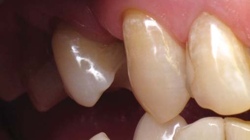
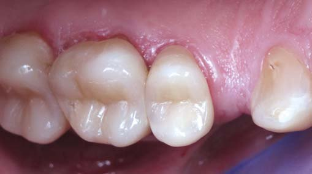
Зуб 14 був видалений з приводу ускладнення карієсу, посиленого поздовжнім розколом кореня, близько 3 років тому. Альвеолярний відросток має зменшення горизонтального об'єму кісткової тканини з вестибулярного боку. Спостерігається нерівномірна атрофія слизової оболонки. Ясенні сосочки виражені помірно. Опорні зуби 13 і 15 раніше ліковані з приводу карієсу, старі реставрації мають некоректне крайове прилягання і підлягають заміні. На рвучому горбі опорного зуба 13 і на вершині щічного горба зуба 15 є майданчики стертості емалі до емалево-дентинної межі. Опорні зуби мають незначну конвергенцію у бік відсутнього зуба 14.
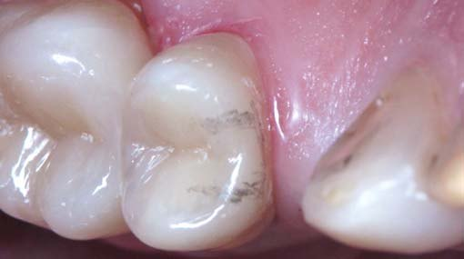
Після відновлення опорних зубів з ліквідацією вогнищ вторинних процесів і стирання.
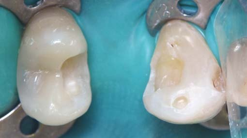
До накладання латексної ізоляції олівцем були позначені межі майбутніх пропилів.
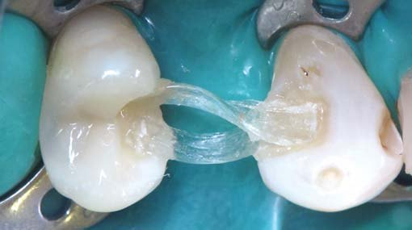
Після накладання рабердаму та ізоляції опорних зубів затискувачами для контролю й адаптації хустки по шийках сформовані порожнини під армуючу балку.
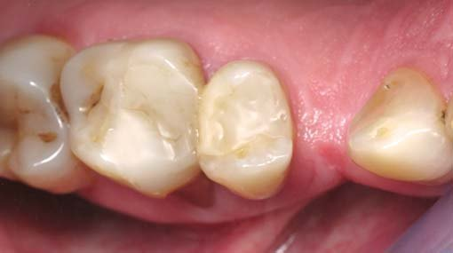
Після адгезивної підготовки зафіксовані по черзі вестибулярний і піднебінний фрагменти армуючої балки скловолокна ІверСтікПеріо на дентинний відтінок D3 композиту Церам-Ікс (Дентсплай Сірона).
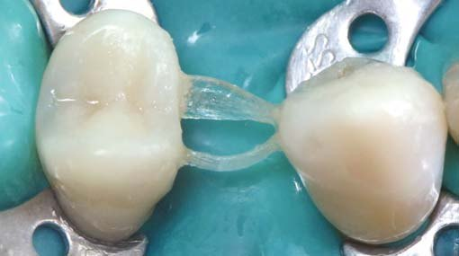
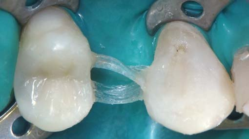
Наступний етап – відновлення опорних зубів у повному обсязі.
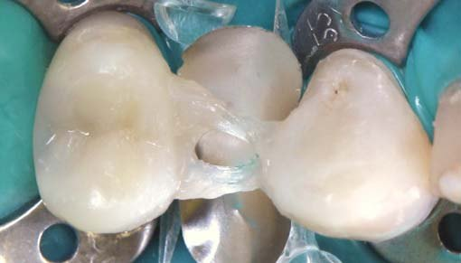
У місцях виходу балки з опорних зубів порціями композиту відтінку прозорої емалі YE Естет-Ікс (Дентсплай Сірона) робляться «пороги» для додаткового захисту волокна і стабілізації конструкції.
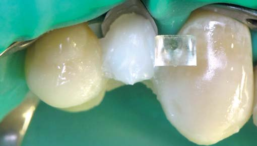
Встановлена матриця середнього розміру із системи Палодент з упором у пороги та альвеолярний відросток, матриця додатково зафіксована клинами.
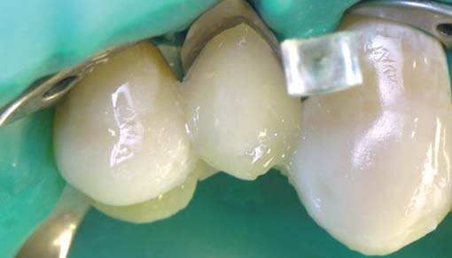
Відтінком WO Естет-Ікс закладено основу – світлий центр штучного зуба.
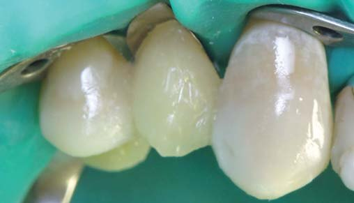
Викладена «пелюстка» плащового дентину на вестибулярній стінці відтінком D3 Церам-Ікс.
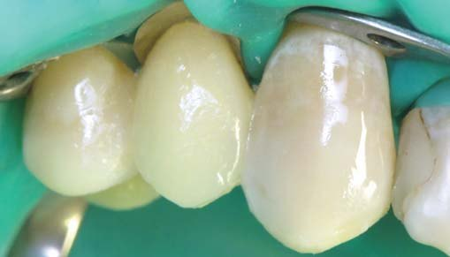
У топографічних межах і з уточненням форми поверхні напрямного горба заповнений об'єм основної емалі на вестибулярній стінці відтінком В2 матеріалу Естет-Ікс.
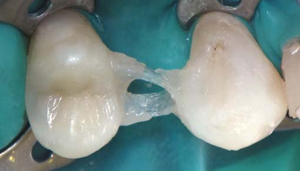
Прозорим відтінком емалі YE Естет-Ікс завершено побудову вестибулярної стінки штучного зуба.
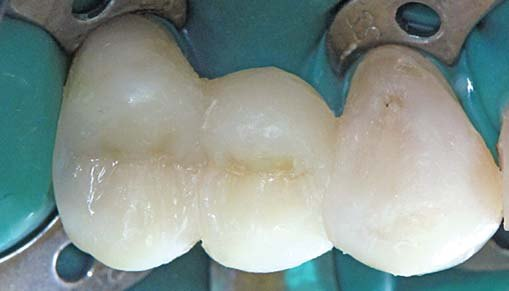
У такій самій послідовності відновлено оральну стінку штучного зуба з урахуванням анатомічних параметрів зуба, який заміщується.
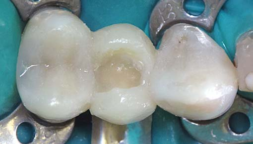
Відновлена оклюзійна зона штучного зуба у пошаровій техніці реставрації.
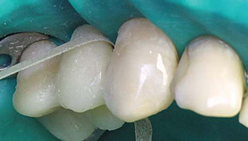
Етап шліфування поверхні проміжного зуба, зверненої до ясен.
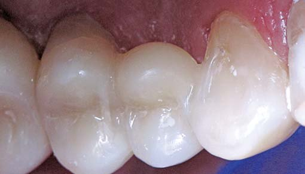
Реставрацію завершено. Вигляд після полірування та інтеграції в оклюзії.
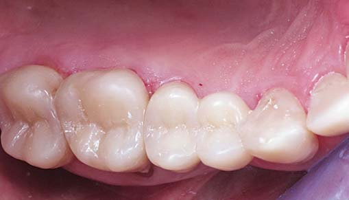
Реставрацію завершено. Вигляд після полірування та інтеграції в оклюзії.

Зовнішній вигляд мостоподібної конструкції через 10 місяців.
Клінічний приклад 2. Конструкція Бічний – Бічний – Бічний
Відсутній перший моляр
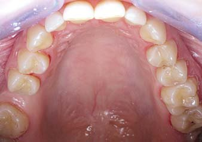
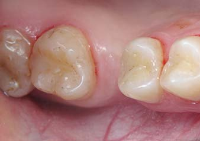
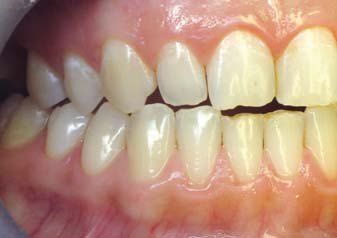
Фото 1-3. Дефект зубного ряду в результаті видалення 7 років тому зуба 16 через ускладнений карієс. Опорні зуби 17, 15 раніше ліковані з приводу карієсу, конвергенція зубів на половину мезіо-дистального розміру коронки відсутнього зуба. Пацієнтці був запропонований варіант імплантації, від якого вона відмовилася. Визначається легкий ступінь стертості.
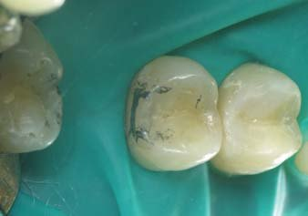
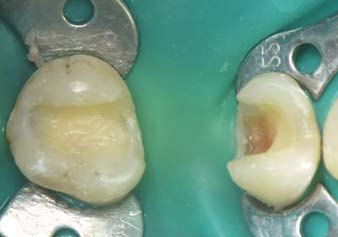
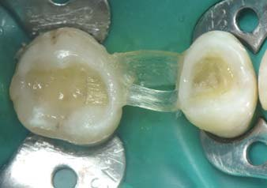
Фото 4, 5. Після попереднього планування дизайну пропилів виконані пропили під армуючу балку одночасно з некректомією вторинних процесів під пломбами. Фото 6. В опорних зубах зафіксовані по черзі вестибулярний фрагмент армуючої балки, що підтримує напрямний горб і вестибулярну стінку зуба стрічкою ІверСтікПеріо, і піднебінний фрагмент, який підсилюватиме піднебінний периметр штучного зуба міцнішою, але широкою стрічкою ІверСтік СіЕндБі. Оскільки перший моляр – це зуб, що становить великий ключ оклюзії, і конструкція буде зазнавати значних жувальних навантажень, є необхідність у посиленні цієї конструкції за рахунок ширшого волокна в опорній зоні штучного зуба.
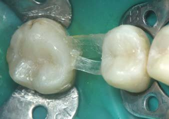
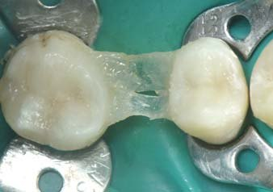
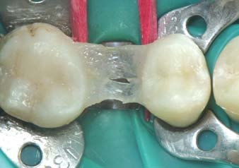
Фото 7-9. Опорні зуби відновлені реставраційно в повному обсязі, у місці фіксації армуючої балки виконані «пороги» для додаткової стабілізації конструкції. Клинами з орального боку зафіксована латунна матриця.
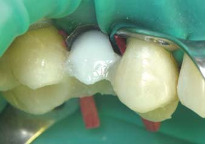
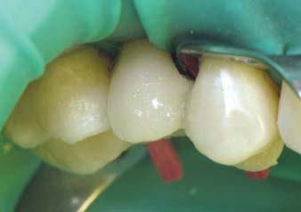
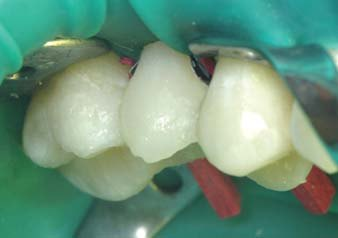
Фото 10-12. У результаті конвергенції опорних зубів місця для відновлення моляра в повному обсязі немає, штучний зуб виконується у вигляді третього премоляра, але з потужнішим опорним піднебінним горбом. Етап відновлення вестибулярної стінки зуба в стандартній послідовності пошаровою технікою.
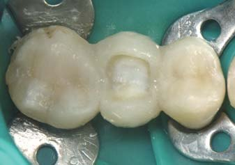
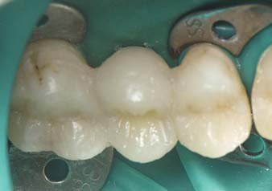
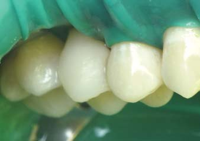
Фото 13. Відновлено оральну стінку штучного зуба. Фото 14-15. Після пошарового заповнення оклюзійної зони проміжного зуба реставрацію завершено.
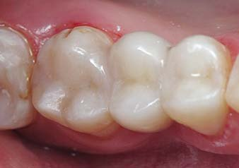
Фото 16-18. Вигляд після інтеграції в оклюзії і полірування.
Фото 19. Через 6 місяців після реставрації. Фото 20. Рентгенологічний контроль адгезивної конструкції із зображенням за допомогою 3D-функції.
Клінічний приклад 3. Конструкція Бічний – Бічний – Бічний
Відсутній перший моляр
Відсутній зуб 26, 11 років тому була виконана адгезивна мостоподібна конструкція з опорою на ортодонтичний дріт, яка відслужила свій вік і потребує заміни. Варіант імплантації не розглядався через загальний стан здоров'я. Був запропонований варіант протезування ортопедичною конструкцією, але зі своїх причин пацієнтка також від нього відмовилася. Опорні зуби 27 і 25 були знову відновлені у прямій техніці.
На відновлених опорних зубах олівцем зроблено начерк майбутніх пропилів під армуючу балку. Виконано препарування порожнин, і по черзі зафіксовані вестибулярний, піднебінний і третій, додатковий фрагменти армуючої балки зі скловолокна ДентапрегБрідж на композит Церам-Ікс відтінку D3. Після відновлення опорних зубів у повному обсязі виконані «пороги» з текучого композиту ЕсДіАр.
На зафіксованій латунній матриці під армуючою балкою виконаний проміжний штучний зуб 26 в анатомічних параметрах протезованого зуба.
Зовнішній вигляд мостоподібної конструкції через 5 років функціонування.
Штучний проміжний зуб
При формуванні проміжної частини конструкції – композитної надбудови на армуючій балці в анатомічній формі відсутнього протезованого зуба – слід враховувати ще один біомеханічний принцип, коли опорні елементи мостоподібної конструкції і його проміжна частина повинні перебувати на одній лінії. Відхилення від осі, викривлення проміжної частини мостоподібної конструкції призводять до трансформації вертикальних і горизонтальних навантажень в обертання, коли діють торсійні навантаження. Навантаження докладається до найбільш виступаючої частини тіла мостоподібної конструкції. У проміжній частині конструкції також ставляться особливі вимоги до форми поверхні, зверненої до ясен, оскільки її вплив при дії на навколишні тканини протезного ложа, слизової оболонки альвеолярного відростка, ясен опорних зубів має велике значення.
Проміжну частину виконуємо овоїдної форми тиснучого типу, зі щільним контактом на ясна альвеолярного відростка. Одна з особливостей проміжної частини такого типу – те, що йде передача тиску на підлеглу кістку і конструкція має три точки опори: дві на опорних зубах і на альвеолярному відростку в проміжній його частині. Саме цей тиск і буде сповільнювати атрофічні процеси в структурах пародонту. За певної стимуляції слизової оболонки ясен під час навантаження на проміжний зуб відбуватиметься формування ясенної зони навколо дотичної частини штучного зуба.
Для ефективного формоутворення проміжної частини конструкції рекомендується використовувати вигнуту викрійку з фрагменту жорсткої латунної матриці у вигляді трапеції, вигин повинен повторювати форму шийки відсутнього зуба.
Після встановлення під зафіксованою армуючою балкою вона має щільно впиратися двома краями в «пороги», а вигнутою частиною – в альвеолярний відросток. Додатково матриця фіксується клинами для резервування вільного простору під міжзубні сосочки.
Першим етапом створення проміжної частини конструкції є закладання основи проміжного штучного зуба. Однією порцією композиту опакового відтінку WO Естет-Ікс (Дентсплай Сірона) формують основу штучного зуба, закладаючи світлий центр конструкції.
Композит розподіляється між армуючою балкою і матрицею на всій її довжині до «порогів», у топографічному розміщенні предентину в центральній частині коронки. Перед світлозатвердінням адаптованої порції матриця з обох боків із зусиллям відтісняється до ясен за допомогою двох гладилок у положенні на ній вестибулярно і орально для того, щоб домогтися її дотичного щільного прилягання до ясен, після чого композит фіксується світлом. Потім іде відновлення в пошаровій техніці вестибулярної стінки зуба: топографічного об'єму основного дентину, основної і поверхневої емалі, а потім у тій самій послідовності – оральної стінки і заповнення оклюзійної зони проміжного зуба, з урахуванням анатомічних параметрів будови зуба, який заміщується. Під час пластичної обробки порцій композиту особливу увагу слід звертати на склеювання конструкції в зоні контактних пунктів, де очікуються значні навантаження. Усі наступні шари моделюються впритул до стабільно зафіксованої матриці у приясенній зоні.
При відновленні дизайну жувальній поверхні конструкції слід враховувати ще один біомеханічний принцип побудови: він полягає в тому, що ширина жувальної поверхні проміжної частини конструкції повинна бути трохи менша, ніж ширина жувальної поверхні зуба, який заміщується. Оскільки будь-який мостоподібний протез функціонує за рахунок резервних сил пародонту опорних зубів, звужені жувальні поверхні тіла зменшують навантаження на опорні зуби. Збільшення ж ширини жувальних поверхонь проміжної частини мостоподібної конструкції призводить до зростання функціонального перевантаження опорних зубів не тільки за рахунок збільшення загальної площі, яка сприймає жувальний тиск, але і за рахунок появи ротаційних зусиль по краю тіла конструкції, що виходить за межі ширини опорних зубів.
Після закінчення реставрації і фінішної полімеризації всієї конструкції, до зняття латексної завіси потрібно провести обробку штрипсами тієї зони конструкції, яка звернена до ясен, і зони «порогів», це забезпечить щадне ставлення до слизової оболонки і запобігатиме її травмуванню під час фінішної обробки.
На полірування та шліфування цієї поверхні конструкції слід звертати особливу увагу. Запорукою відсутності запалення під таким мостом буде гладкість проміжного зуба, і з боку ясен не повинно бути ніяких ретенційних елементів — заглиблень, нависань і нерівностей матеріалу. Поверхня має бути абсолютно сформованою, гладенькою і оптимальною для ясен. Після зняття рабердаму обов'язковим етапом, який впливає на довговічність конструкції, є проведення грамотної інтеграції мостоподібної конструкції з точки зору нормальної оклюзії, забезпечення відновлення правильних оклюзійних співвідношень у зоні дефекту при ретельному моделюванні оклюзійної поверхні мостоподібного протеза, який буде вписуватися в існуючу у пацієнта функціональну оклюзію. Передусім слід подбати про запобігання передчасним контактам, зниженню міжальвеолярної відстані і функціональному перевантаженню тканин пародонту.
Висновки
Успіх, ефективність і довговічність конструкцій, виконаних у поданій методиці, залежать від точного дотримання показань і протипоказань до їх виготовлення. Ретельна оцінка стоматологічного статусу пацієнта, включаючи особливості оклюзії, а також правильне виконання протоколу побудови з дотриманням біомеханічних принципів роботи таких конструкцій дозволяють звести до мінімуму невдачі і отримати стійкі позитивні естетичні та функціональні результати.
Щадне ставлення до здорових тканин зубів – одна з переваг конструкції, а виконання її за одне відвідування без участі зуботехнічної лабораторії вигідно скорочує терміни протезування. Важливим є м'який перерозподіл жувального навантаження між усіма елементами конструкції. А можливість оборотності ситуації без шкоди для пацієнта поряд з економічною вигодою роблять цей метод привабливим як для лікаря, так і для пацієнта.
Література
- Радлинский С.В. Адгезивные мостовидные конструкции // ДентАрт. –1998. – №2. –С.28-40.
- Кибенко И.М. Адгезивные мостовидные конструкции передних зубов // ДентАрт. –2009. –№3. –С.27-40.
- Шварц А.Д. Биомеханика в стоматологии // Стоматология Сегодня. –2008. –№7(77).
- Гришин С.Ю. Адгезивные мостовидные протезы: новые возможности // DentalMarket. –2003. –№ 6. –C.24-25.
- Дворникова Т.С., Кирсанова Н.В. Композитная реставрация и ее волоконное армирование // Методическое руководство. 3-e издание. Санкт-Петербург. –2011. –С.37-51.
- Vallittu P.K. Flexural properties of acrylic resin polymers reinforced with unidirectional and woven glass fibers // J.Prosthet. Dent. –1999. –№ 81: 318-326.
- Fennis W.M.M., Terzvergil A., Kuijs R.H., Lassila L.V.J., Kreulen C.M., Creugers N.H.M., Vallittu P.K. In vitro fracture resistance of fiber reinforced cups-replacing composite restorations // Dent Master. –2005. –21(6): 563-72.
- Jancar J. Сравнительный анализ материалов, произведенных на основе DENTAPREG™ — технологии текст // Новое в стоматологии для зубных техников. –2000. –№10. –С.3-12.
- Радлинский С.В. Виды прямой реставрации зубов // ДентАрт. –2004. –№1. –С.3-6.
- Грютцнер А. Текучий композит ЭсДиАр – умный заменитель дентина // ДентАрт. –2011. –№3. –С.5-7.
- Барабанти Н., Черутти А. // Современная стоматология. –2008. –№ 4(44). –С.1-7.